TUVYAN · Historical and Family Archives
Gus Saboy Memorial Archive
Augustus Ulat Saboy (3 May 1928 – 5 June 2002)
Journalist · Public servant · Historian of Kalinga · Peace Advocate ·Champion of Indigenous Institutions
Biographical introduction
Born in Balbalasang, Balbalan, Kalinga, Augustus “Gus” Ulat Saboy pursued education at Silliman University and Baguio Colleges Foundation, later working as a journalist, editor, broadcaster, provincial official, and writer on the history and culture of the Cordillera. His professional associations included the Baguio Midland Courier, Philippine News Agency, and Radyo ng Bayan. His writings addressed Kalinga history, peace-pact traditions, and regional autonomy.
Wearing many hats led him to various accomplishments among which are as follows:
As a journalist, he initiated the establishment of the government radio station in Tabuk, Kalinga, DZRK, and subsequently serving as its station manager for a time. He was also chosen by his fellow newsmen to solely cover the 1st Overseas Goodwill Mission and Seamanship Training to the Republic of China (Taiwan) of the Philippine Military Academy Corps of Cadets in May 1969.
As a tribal leader, he and Lutheran Pastor Luis Ao-as successfully negotiated a lasting peace pact between warring tribes (Sumadel and Butbut) in the early '80s, after failed previous attempts of mediation by the Philippine government and the New People's Army and their legal political allies. During the same period, he also initiated the movement to codify the Pagta, the by-laws of the bodong, the peace pact system governing Kalinga communities. This culminated in the publication of this customary code in the '90s through the work of a committee in which he was a member.
Fearing that the Cellophil Resources Corporation (CRC)'s logging operations would sweep through the Vanaw ancestral domain in Kalinga, he pushed for this tribal territory to be declared as a protected zone. This led to then President Ferdinand Marcos' Presidential Decree 1357 on 09 December 1974 establishing the Balbalasang-Balbalan National Park. Prior to the declaration, Republic Act No. 6463 was enacted on 17 June 1972 to set aside portions of Balbalan municipality as a tourist area and national park. The original 1,338 hectares was then expanded 40 years later through Republic Act No. 11688, also known as the Banao Protected Landscape Act, through the initiative of then Cong. Allen Jesse Capuyan Mangaoang, a relative of Gus Saboy.
Most of his surviving photographic and textual documents are now under the care of the University of the Philippines Baguio Cordillera/Northern Luzon Archives (see UP Baguio Archivist Cristina B. Villanueva's @ https://tuvyan.github.io/augustus-ulat-saboy-papers-cb-villanueva.html.)
Selected milestones
1928 — Born in Balbalasang · 1953 — BS Education, Silliman University · 1963 — BA, Baguio Colleges Foundation · 1984 — Philippine News Agency bureau chief · 1986 — Radyo ng Bayan Kalinga-Apayao station manager · 1989 — Cordillera Bodong Administration provincial executive officer · 2002 — Died on 5 June · 2010 — Papers donated to UP Baguio.
Explore the writings
Browse this curated collection directly below. The links lead to the original article pages; no original text, dates, or source categories have been changed.
Writings by Augustus “Gus” Ulat Saboy
Texts explicitly attributed to Gus Saboy in the archived pages. Original articles remain in their existing categories.
- The Pagta: Kalinga’s Contribution to Philippine Culture — Article identified in the archive as Gus Saboy’s, originally published in 1999
- Pioneering: A Life for the Stout-Hearted and the Adventurous — Attributed to Augustus Ulat Saboy
- Augustus Ulat Saboy’s Taiwan Diary — Historical reporting and travel account
- Sumadel–Butbut Peace Pact — 1981 report attributed to Augustus Ulat Saboy
- Tabuk Citihood: Historical Notes — Article signed by Augustus Ulat Saboy
- Balbalasang, It’s You — Poem or song archived under his name
Collaborative historical writing
Works with shared attribution are listed separately to preserve co-authorship.
- The Banaos — Credited jointly to Augustus and Anatalia Saboy
About Gus Saboy: memorials and archival records
These pages concern Gus Saboy but should not be mistaken for articles authored by him.
- AUS: Augustus “Gus” Ulat Saboy — Biographical and memorial material
- Augustus Ulat Saboy Papers at UP Baguio — Archival account by Cristina B. Villanueva
- Response to Eulogies for Gus Saboy — Memorial reflection
Photographic archive
Edit photographs and captions in TUVYAN Studio (publisher access required to save changes).
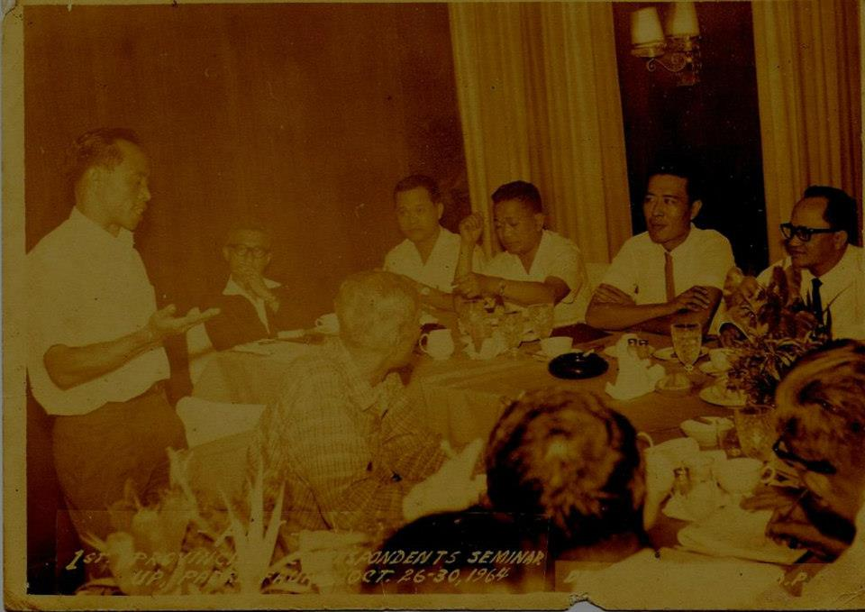
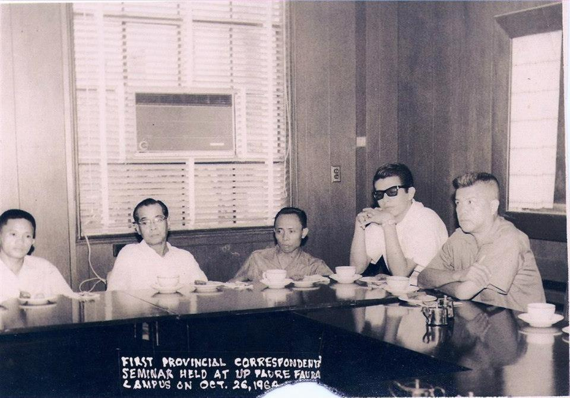
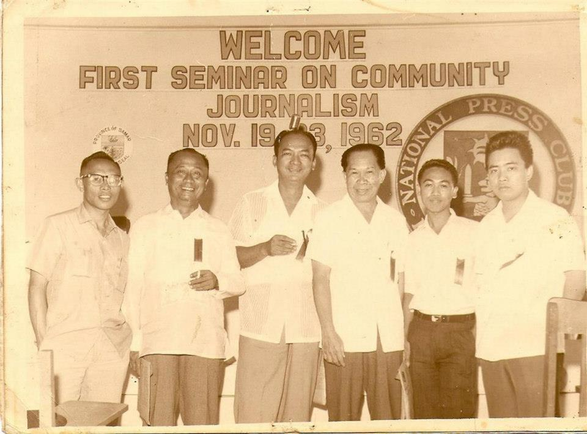
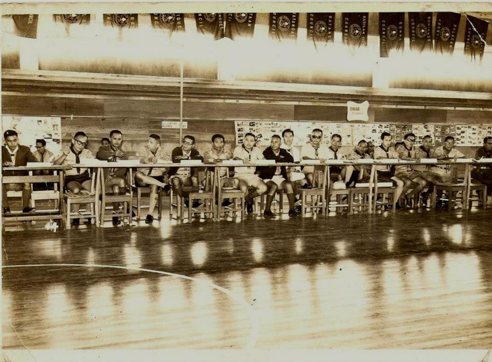
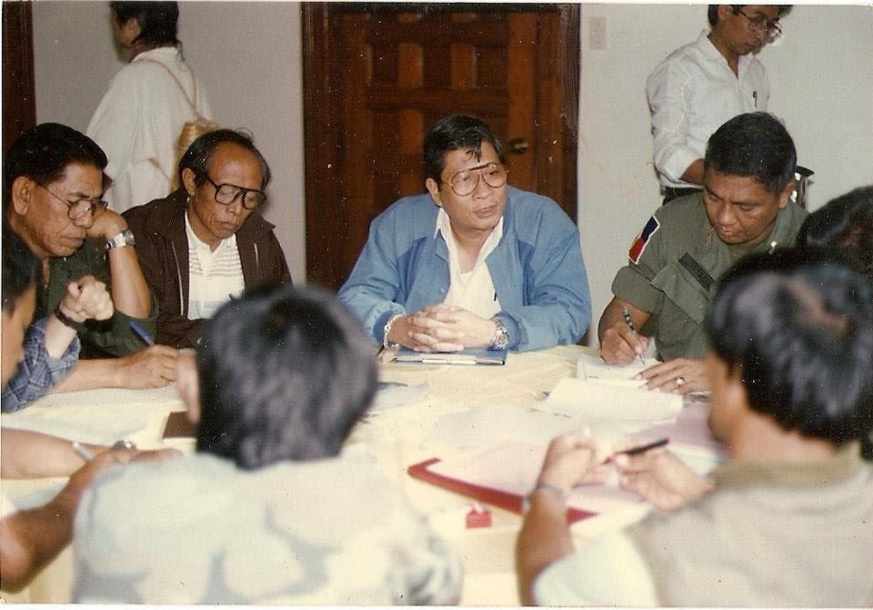
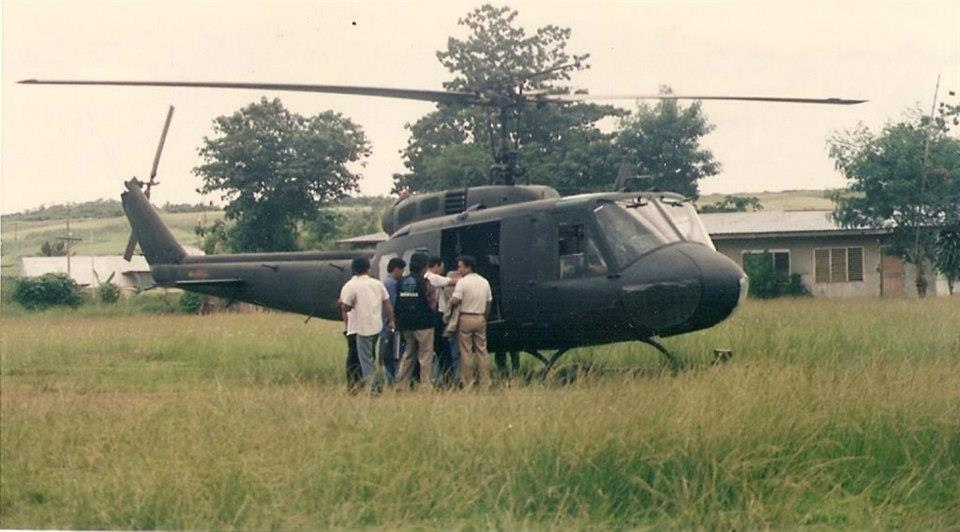
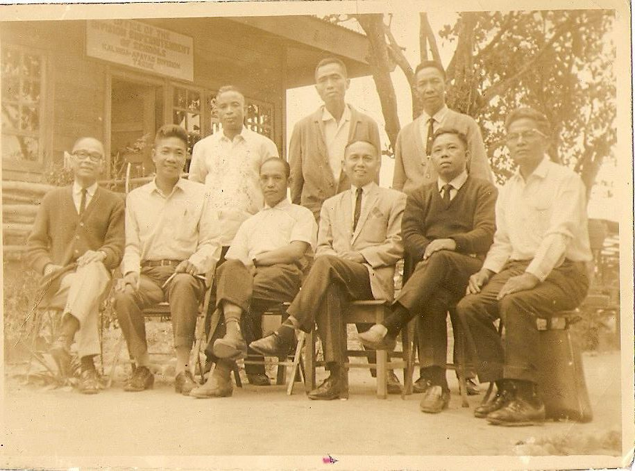

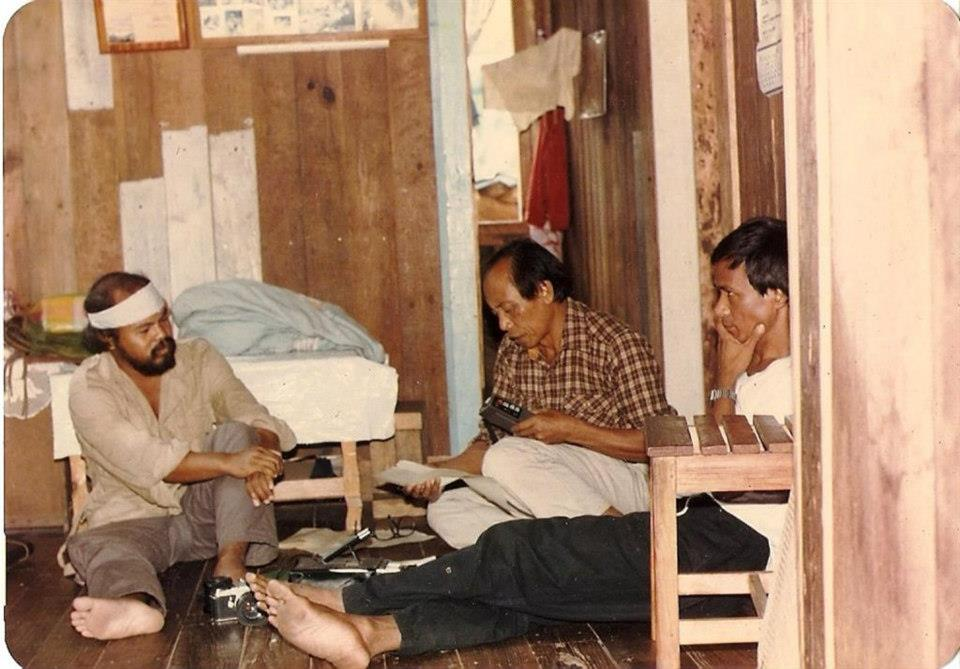

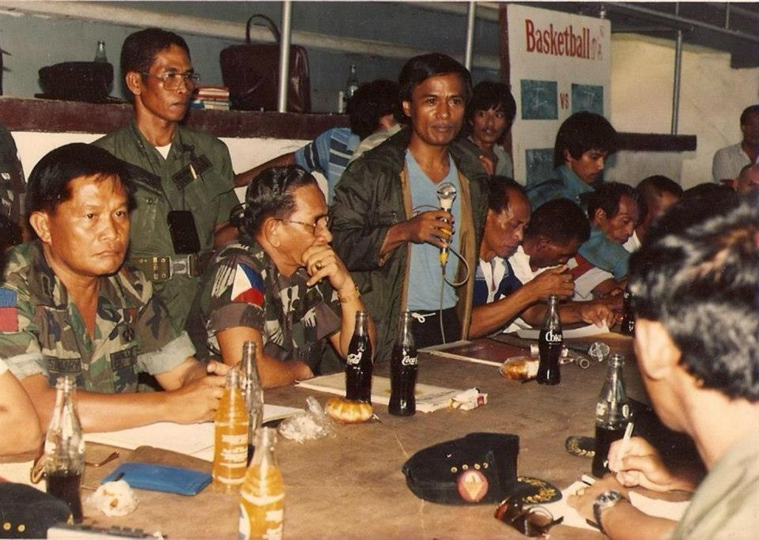
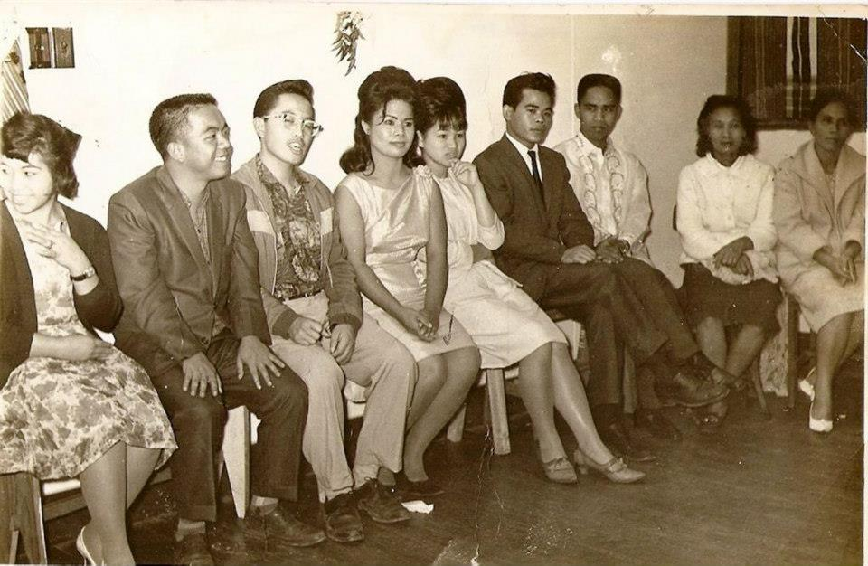
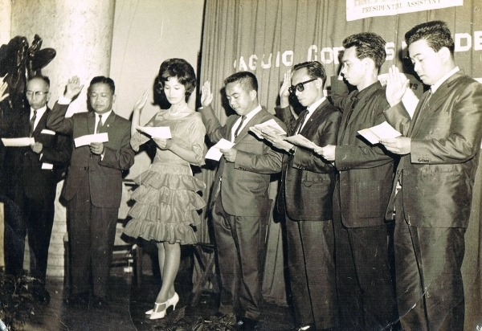
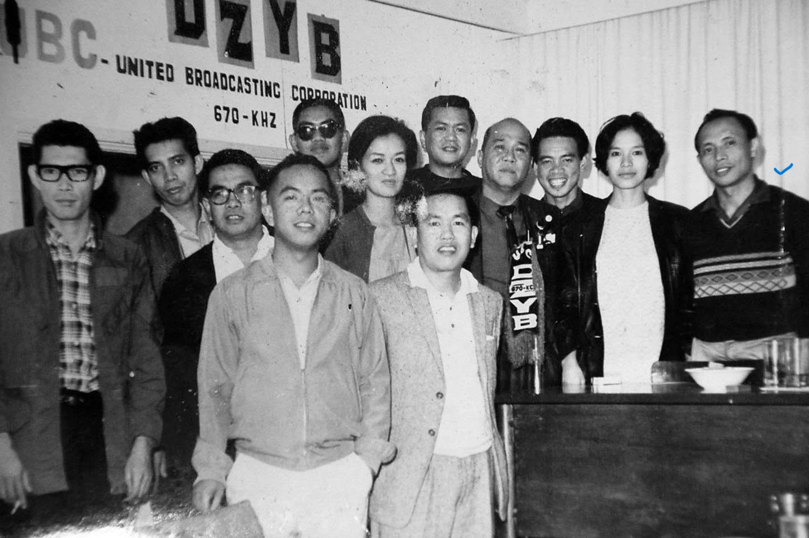
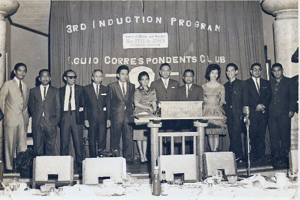
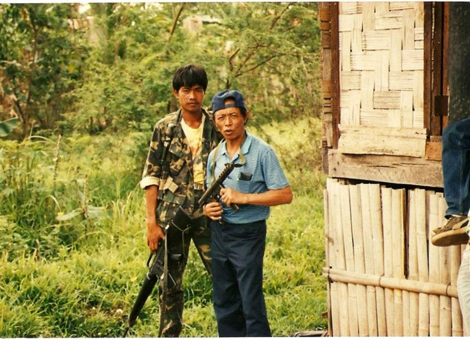
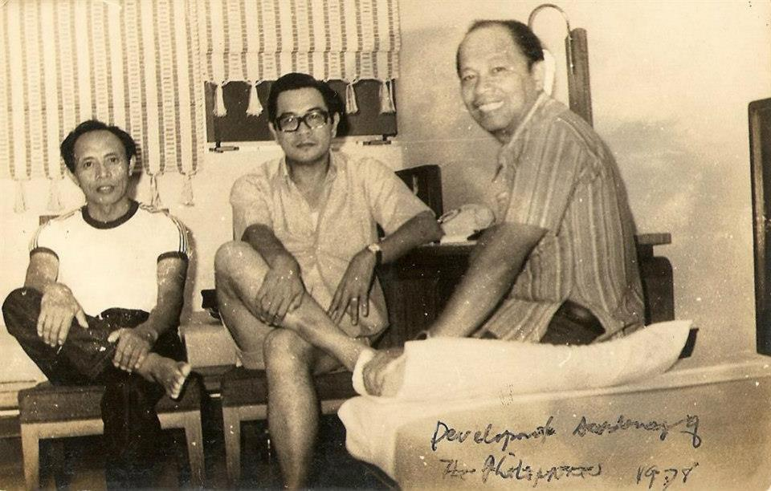


Sources and archival method
Sources: TUVYAN's archived Gus Saboy profile, family editorial notes, and Cristina B. Villanueva, “The Augustus U. Saboy Papers,” UP Baguio Cordillera/Northern Luzon Archives. The photographs are family-supplied archival images.